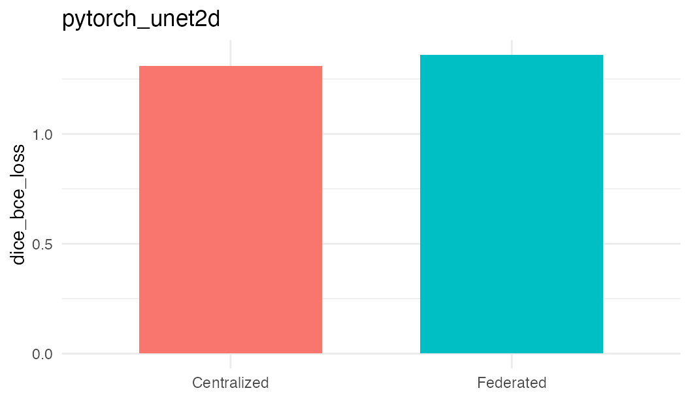

Vision Validation: pytorch_unet2d
validation-vision-pytorch-unet2d.RmdThis vignette records the catalogue coverage check for a dsFlower vision template. Synthetic PNG images were split across three Opal/Rock nodes, trained federatively through DataSHIELD, and compared with a centralized PyTorch baseline trained on the pooled synthetic cohort. This is a path validation for image staging, template execution, result persistence, and cleanup; the current biomedical direct-image benchmark is the PathMNIST vignette, and the dsImaging handoff evidence is reported in the LUNG1 vignettes.
overview <- data.frame(
Field = c(
'method', 'task', 'target', 'n_total', 'image_size', 'rounds',
'centralized_metric', 'centralized_loss', 'centralized_accuracy',
'centralized_dice', 'federated_status', 'federated_loss',
'federated_n_failures', 'delta_loss',
'acceptance_max_loss_ratio', 'acceptance_max_loss_margin',
'acceptable_loss', 'validation_status'
),
Value = c(
row$method, row$task, row$target, row$n_total, validation$image_size, row$rounds,
row$centralized_metric, fmt(row$centralized_loss), fmt(row$centralized_accuracy),
fmt(row$centralized_dice), row$federated_status, fmt(row$federated_loss),
fmt(row$federated_n_failures), fmt(row$delta_loss),
fmt(row$acceptance_max_loss_ratio), fmt(row$acceptance_max_loss_margin),
row$acceptable_loss, row$validation_status
)
)
knitr::kable(overview)| Field | Value |
|---|---|
| method | pytorch_unet2d |
| task | segmentation |
| target | mask_path |
| n_total | 12 |
| image_size | 64 |
| rounds | 1 |
| centralized_metric | dice_bce_loss |
| centralized_loss | 1.3099 |
| centralized_accuracy | NA |
| centralized_dice | 0.0000 |
| federated_status | ok |
| federated_loss | 1.4397 |
| federated_n_failures | 0.0000 |
| delta_loss | 0.1298 |
| acceptance_max_loss_ratio | NA |
| acceptance_max_loss_margin | NA |
| acceptable_loss | TRUE |
| validation_status | pass |
loss_df <- data.frame(
mode = c('Centralized', 'Federated'),
loss = c(row$centralized_loss, row$federated_loss)
)
loss_df <- loss_df[is.finite(loss_df$loss), , drop = FALSE]
if (nrow(loss_df) > 0 && requireNamespace('ggplot2', quietly = TRUE)) {
ggplot2::ggplot(loss_df, ggplot2::aes(x = mode, y = loss, fill = mode)) +
ggplot2::geom_col(width = 0.65, show.legend = FALSE) +
ggplot2::labs(x = NULL, y = row$centralized_metric[[1]], title = method_id) +
ggplot2::theme_minimal(base_size = 11)
} else {
plot.new()
text(0.5, 0.5, 'No federated loss available for this method')
}
Step-By-Step Run Output
The committed catalogue artifact stores the output of the centralized and federated runs. The chunks below render that output explicitly so the reader can inspect the full path instead of seeing only a summary table.
input_trace <- data.frame(
step = c('generate_images', 'split_sites', 'upload_metadata', 'federated_rounds'),
output = c(
paste(row$n_total, 'synthetic PNG samples at', validation$image_size, 'x', validation$image_size),
paste(row$n_sites, 'Opal/Rock nodes with', row$n_per_site, 'rows each'),
'metadata tables only: id, relative_path, mask_path, label',
paste(row$rounds, 'round(s) through DataSHIELD + Flower')
)
)
knitr::kable(input_trace)| step | output |
|---|---|
| generate_images | 12 synthetic PNG samples at 64 x 64 |
| split_sites | 3 Opal/Rock nodes with 4 rows each |
| upload_metadata | metadata tables only: id, relative_path, mask_path, label |
| federated_rounds | 1 round(s) through DataSHIELD + Flower |
centralized_output <- data.frame(
metric = c('status', row$centralized_metric, 'accuracy', 'dice', 'samples'),
value = c(
row$centralized_status,
fmt(row$centralized_loss),
fmt(row$centralized_accuracy),
fmt(row$centralized_dice),
row$n_total
)
)
knitr::kable(centralized_output)| metric | value |
|---|---|
| status | ok |
| dice_bce_loss | 1.3099 |
| accuracy | NA |
| dice | 0.0000 |
| samples | 12 |
cat('[centralized] engine: local PyTorch baseline\n')
#> [centralized] engine: local PyTorch baseline
cat('[centralized] method:', row$method, '\n')
#> [centralized] method: pytorch_unet2d
cat('[centralized] metric:', row$centralized_metric, '\n')
#> [centralized] metric: dice_bce_loss
cat('[centralized] loss:', fmt(row$centralized_loss), '\n')
#> [centralized] loss: 1.3099
cat('[centralized] accuracy:', fmt(row$centralized_accuracy), '\n')
#> [centralized] accuracy: NA
cat('[centralized] dice:', fmt(row$centralized_dice), '\n')
#> [centralized] dice: 0.0000
dsflower_output <- data.frame(
metric = c('status', 'loss', 'client_failures', 'accepted', 'validation_status'),
value = c(
row$federated_status,
fmt(row$federated_loss),
fmt(row$federated_n_failures),
row$acceptable_loss,
row$validation_status
)
)
knitr::kable(dsflower_output)| metric | value |
|---|---|
| status | ok |
| loss | 1.4397 |
| client_failures | 0.0000 |
| accepted | TRUE |
| validation_status | pass |
cat('[DataSHIELD] connected nodes:', row$n_sites, '\n')
#> [DataSHIELD] connected nodes: 3
cat('[dsFlower] model template:', row$method, '\n')
#> [dsFlower] model template: pytorch_unet2d
cat('[Flower] final federated loss:', fmt(row$federated_loss), '\n')
#> [Flower] final federated loss: 1.4397
cat('[Flower] client failures:', fmt(row$federated_n_failures), '\n')
#> [Flower] client failures: 0.0000
cat('[acceptance] max loss ratio:', fmt(row$acceptance_max_loss_ratio), '\n')
#> [acceptance] max loss ratio: NA
cat('[acceptance] max loss margin:', fmt(row$acceptance_max_loss_margin), '\n')
#> [acceptance] max loss margin: NA
cat('[acceptance] PASS:', row$validation_status == 'pass', '\n')
#> [acceptance] PASS: TRUEInline Execution Path
The validation row above was generated by running this vision template through the inline workflow shown below. The rendered tables and console trace above are loaded from the committed evidence artifact written by that run.
library(DSI)
library(DSOpal)
library(dsFlowerClient)
library(opalr)
opal_urls <- trimws(strsplit(Sys.getenv(
'DSFLOWER_OPAL_URLS',
'https://localhost:8443,https://localhost:8444,https://localhost:8445'
), ',', fixed = TRUE)[[1]])
opal_users <- rep(Sys.getenv('OPAL_USER', 'administrator'), length(opal_urls))
opal_passwords <- rep(Sys.getenv('OPAL_PASSWORD', 'admin123'), length(opal_urls))
project <- Sys.getenv('DSFLOWER_DEMO_PROJECT', 'dsflower_demo')
image_root <- Sys.getenv('DSFLOWER_IMAGE_ROOT', '/tmp/dsflower_vision_method_validation')
make_png <- function(path, label, size = validation$image_size) {
dir.create(dirname(path), recursive = TRUE, showWarnings = FALSE)
grid <- seq(0, 1, length.out = size)
img <- outer(grid, grid, function(x, y) if (label == 1L) x else y)
grDevices::png(path, width = size, height = size)
old_par <- graphics::par(mar = c(0, 0, 0, 0))
graphics::plot.new()
graphics::rasterImage(grDevices::as.raster(img), 0, 0, 1, 1)
graphics::par(old_par)
grDevices::dev.off()
}
site_tables <- vector('list', length(opal_urls))
for (site in seq_along(opal_urls)) {
rows <- vector('list', validation$n_per_site)
for (i in seq_len(validation$n_per_site)) {
label <- as.integer(i %% 2L)
rel <- file.path(paste0('site', site), 'images', sprintf('img_%03d.png', i))
mask <- file.path(paste0('site', site), 'masks', sprintf('mask_%03d.png', i))
make_png(file.path(image_root, rel), label)
make_png(file.path(image_root, mask), label)
rows[[i]] <- data.frame(id = sprintf('vision_site%d_%03d', site, i),
relative_path = rel, mask_path = mask,
label = label)
}
site_tables[[site]] <- do.call(rbind, rows)
}
table_paths <- character(length(opal_urls))
for (i in seq_along(opal_urls)) {
opal <- opalr::opal.login(
username = opal_users[[i]], password = opal_passwords[[i]],
url = opal_urls[[i]],
opts = list(ssl_verifyhost = 0L, ssl_verifypeer = 0L)
)
opalr::dsadmin.set_option(opal, 'dsflower.image_data_root',
image_root, profile = 'default')
table_name <- paste0('vision_validation_', method_id, '_site', i)
opalr::opal.table_save(opal, site_tables[[i]], project = project,
table = table_name, id.name = 'id',
policy = 'generate', overwrite = TRUE, force = TRUE)
table_paths[[i]] <- paste(project, table_name, sep = '.')
opalr::opal.logout(opal)
}
builder <- DSI::newDSLoginBuilder()
for (i in seq_along(opal_urls)) {
builder$append(server = paste0('opal', i), url = opal_urls[[i]],
user = opal_users[[i]], password = opal_passwords[[i]],
table = table_paths[[i]], driver = 'OpalDriver')
}
conns <- DSI::datashield.login(builder$build(), assign = TRUE, symbol = 'D')
model <- switch(
method_id,
pytorch_resnet18 = ds.flower.model.pytorch_resnet18(
n_classes = 2L, image_size = validation$image_size,
batch_size = 2L, local_epochs = 1L
),
pytorch_densenet121 = ds.flower.model.pytorch_densenet121(
n_classes = 2L, image_size = validation$image_size,
batch_size = 2L, local_epochs = 1L
),
pytorch_unet2d = ds.flower.model.pytorch_unet2d(
n_classes = 1L, image_size = validation$image_size,
batch_size = 1L, local_epochs = 1L, base_channels = 8L
)
)
recipe <- ds.flower.recipe(
model = model,
strategy = ds.flower.strategy.fedavg(),
privacy = ds.flower.privacy.sandbox_open(),
target = row$target,
num_rounds = row$rounds
)
symbol <- paste0('flower_', method_id)
ds.flower.nodes.init(conns, data = 'D', symbol = symbol)
ds.flower.nodes.prepare(
conns, symbol = symbol, target_column = row$target,
run_config = c(model$params, list(data_type = 'image')),
privacy = recipe$privacy, template_name = model$template
)
ds.flower.nodes.ensure(conns, symbol = symbol, template_name = model$template)
fit <- ds.flower.run.start(recipe, conns = conns, verbose = TRUE)
ds.flower.nodes.cleanup(conns, symbol = symbol)
DSI::datashield.logout(conns)
history <- fit$history
federated_loss <- tail(stats::na.omit(as.numeric(history$loss)), 1)
federated_failures <- max(as.numeric(history$n_failures), na.rm = TRUE)
acceptable <- federated_failures == 0 &&
federated_loss <= row$centralized_loss * row$acceptance_max_loss_ratio +
row$acceptance_max_loss_margin
acceptable